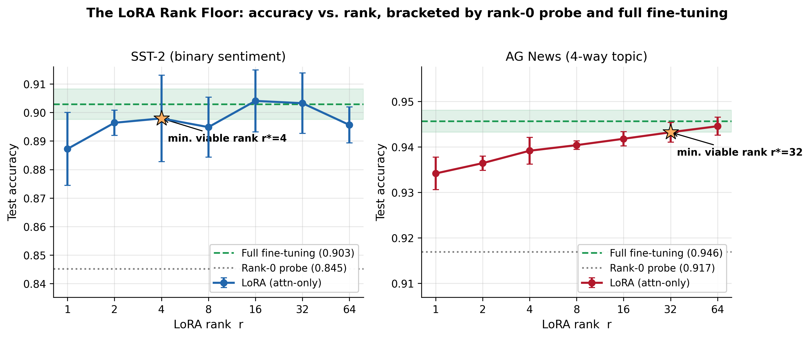
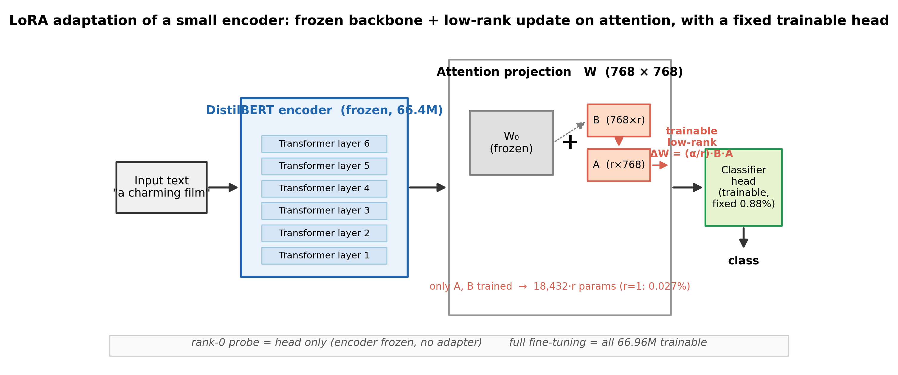
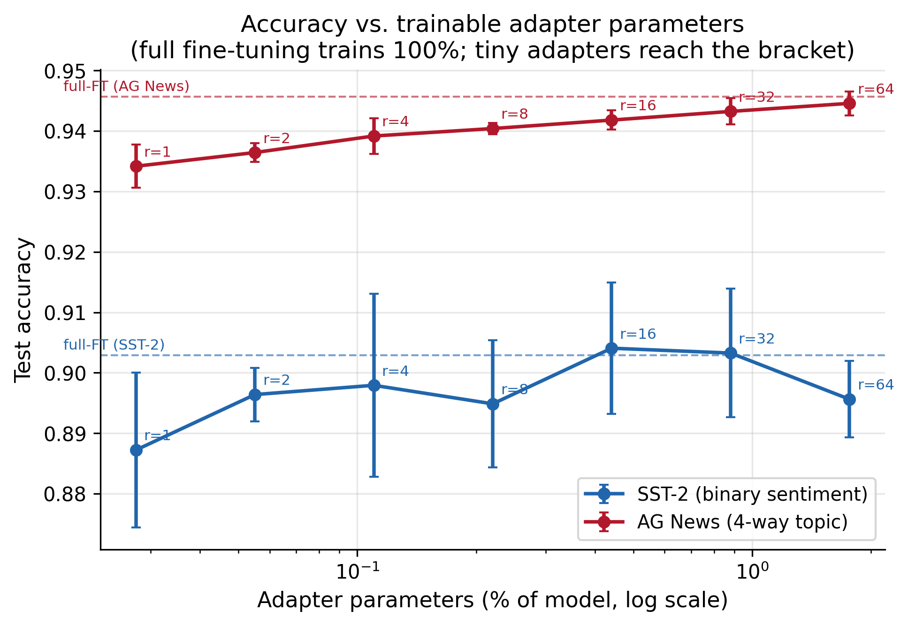
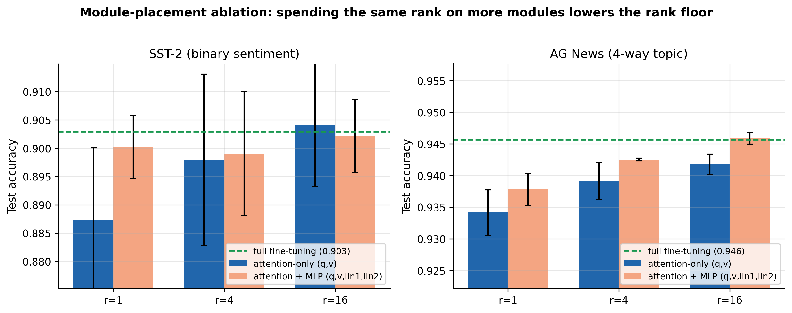
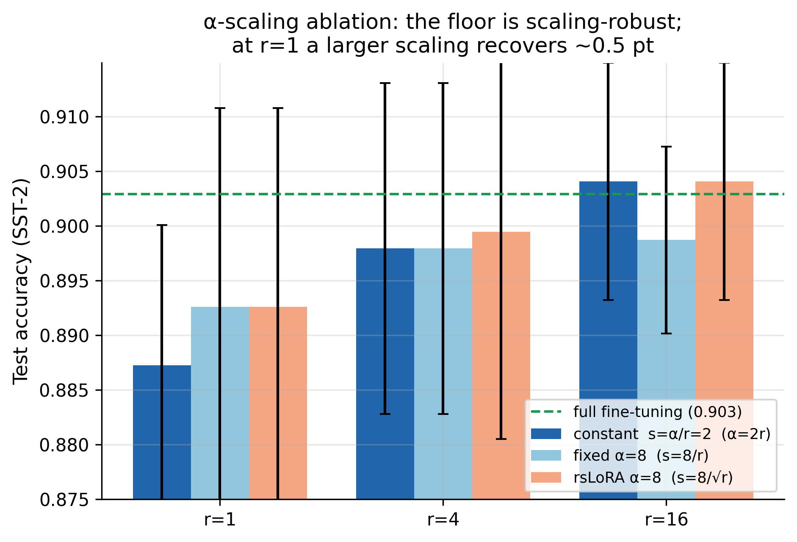
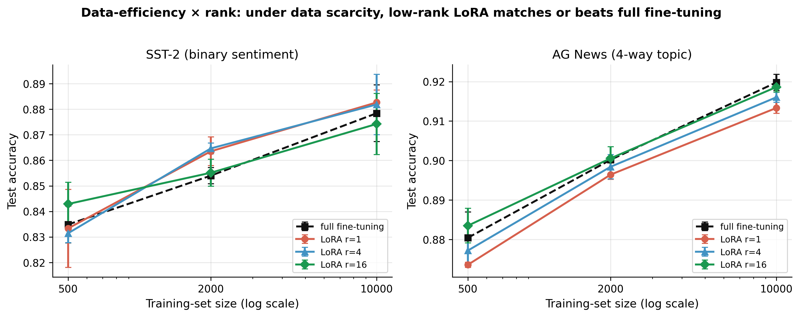

A Statistically Grounded Study of the Minimum Viable LoRA Rank for Small Transformer Encoders
Prit Kudale1, Naman Dwivedi2, Raj Dandekar2, Rajat Dandekar2, Sreedath Panat2
1prit.kudale@gmail.com · 2Vizuara AI Labs, hello@vizuara.com
Low-Rank Adaptation (LoRA) is the default method for parameter-efficient fine-tuning, and its rank r is the single knob that trades adaptation capacity against the number of trainable parameters. Yet how low r can be pushed before adaptation degrades has never been characterized with statistical rigor for small encoder classifiers. We close this gap with a controlled study on DistilBERT-base over two tasks of differing difficulty, SST-2 and AG News, sweeping r ∈ {1,2,4,8,16,32,64} with three seeds per cell, bracketed by a frozen-encoder rank-0 probe and full fine-tuning. We define the minimum viable rank as the smallest r whose accuracy is statistically indistinguishable (Welch t-test, α=0.05) from both full fine-tuning and high-rank LoRA. The rank floor is strikingly low and tracks task difficulty: r=4 on SST-2 (0.11% of parameters) and r=32 on AG News under strict equivalence (r≈4 under a 0.5% practical tolerance). Even r=1, with only 18,432 adapter parameters (0.027% of the model), recovers 59 to 72% of the probe-to-full-fine-tuning gap. The only regime in which adaptation truly fails is rank 0. The floor is robust to the LoRA scaling rule and, remarkably, to data scarcity: at 500 to 10,000 training examples, low-rank LoRA matches or exceeds full fine-tuning.






| Task | Full FT | Probe (r=0) | LoRA r=1 | LoRA r=4 | LoRA r=64 | Min. viable rank |
|---|---|---|---|---|---|---|
| SST-2 (dev) | 0.903 | 0.845 | 0.887 | 0.898 | 0.896 | r = 4 (0.11%) |
| AG News (test) | 0.946 | 0.917 | 0.934 | 0.939 | 0.945 | r = 32 / ≈4 |
Test accuracy, mean over 3 seeds. Minimum viable rank = smallest rank statistically indistinguishable from full fine-tuning (Welch t-test, α=0.05); AG News shows the strict floor and the practical (≤0.5%) floor. Full per-rank table with confidence intervals and parameter counts in the paper and the results ledger.
@misc{kudale2026lorarankfloor,
title = {How Low Can the Rank Go? A Statistically Grounded Study of the
Minimum Viable LoRA Rank for Small Transformer Encoders},
author = {Kudale, Prit and Dwivedi, Naman and Dandekar, Raj and
Dandekar, Rajat and Panat, Sreedath},
year = {2026},
note = {Vizuara AI Labs}
}